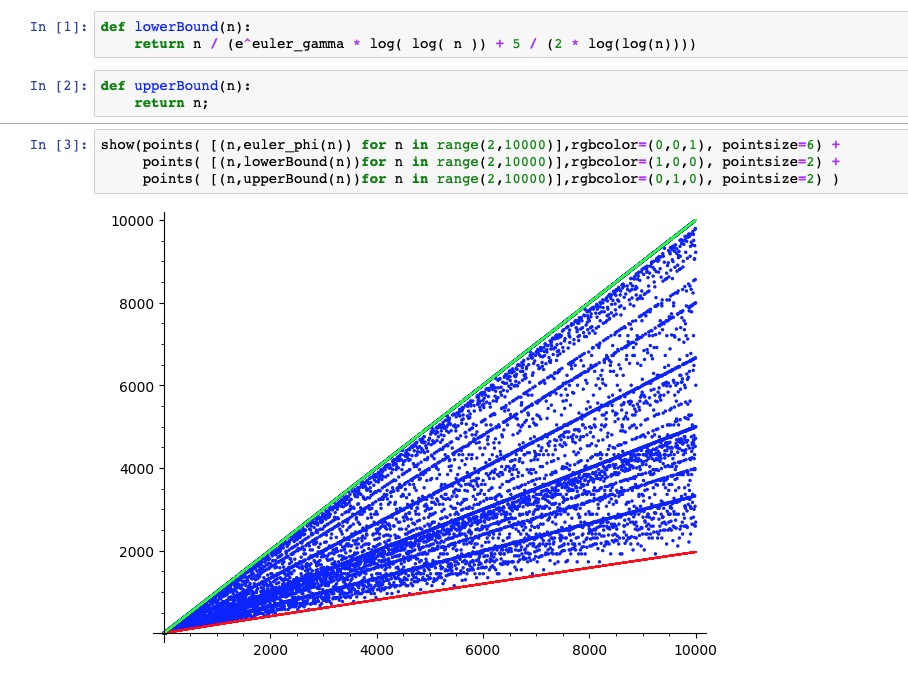
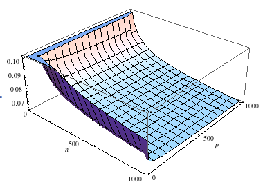
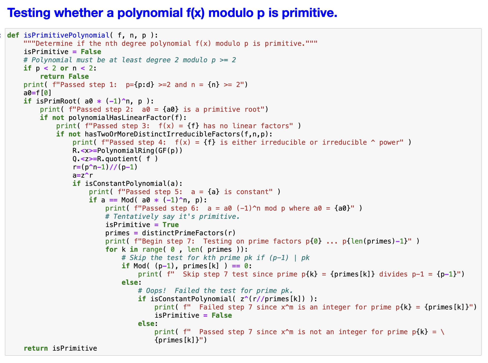
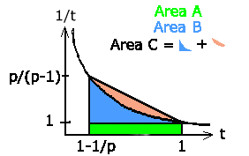

Copyright © 1986-2026 by Sean Erik O'Connor. Permission is granted to copy, distribute and/or modify this document under the terms of the GNU Free Documentation License, Version 1.3 or any later version published by the Free Software Foundation; with no Invariant Sections, no Front-Cover Texts, and no Back-Cover Texts. A copy of the license is included in the section entitled GNU Free Documentation License
Introduction
This technical note explains in great detail the technique used to compute primitive polynomials from the paper by Alanen and Knuth with extensions due to Sugimoto . Prerequisites: Knowledge of elementary number theory, and finite fields as covered in books on abstract algebra. See the references.
I have a C++ program which computes primitive polynomials of arbitrary degree n modulo any prime p.
When polynomials are of very large degree, there are faster methods which use computer algebra software to compute Conway and pseudo-Conway polynomials, which are primitive polynomials with additional nice properties. See Sage Math Notebook for Finding and Testing Primitive Polynomials
Fast Review of Number Theory, Finite Fields and Combinatorics
Here is an ultra-fast review of some basic results we'll need to use.
Number Theory
Primitive Roots
An integer $a$ is defined to be a primitive root of the prime $p$ if $a^k \ne 1 (mod \: p)$ for $0 \lt k \lt p-1$ but $a^{p-1} \equiv 1 (mod \: p)$ i.e. the integer a generates the cyclic group $\{ 1, 2, 3, ..., p-1 \}$ under modulo $p$ multiplication. Primitive roots exist for all prime p. Example: 2 is a primitive root of 3 because $2^1 \equiv 2 \not \equiv 1 (mod \: 3)$ but $2^2 \equiv 1 (mod \: p)$
Euler Phi Function
The Phi or Totient function is defined by $\phi( 1 ) = 1$ and $\phi( n )$ = (number of integers between 1 and n-1 relatively prime to n) for $n \gt 1$
Integers a and b are defined to be relatively prime (coprime) if the greatest common divisor of a and b is 1). For prime p, $$ \phi( p ) = p-1 $$ In general, if n has the prime factorization $$ n = p_1^{e_1} \ldots p_k^{e_k} $$ then $$ \phi( n ) = n \left( 1 - {1 \over {p_1}} \right) \ldots \left( 1 - {1 \over {p_k}} \right) $$
Example: $\phi( 18 ) = \phi( 2 \bullet 3^2 ) = 18 \bullet ( 1 - {1 \over 2} )( 1 - {1 \over 3} ) = 6$ = number of integers between 1 and 17 relatively prime to 18 = # {1, 5, 7, 11, 13, 17}
We have the following bounds for $\phi$, for $n \ge 3$ $$ {n \over { e^\gamma \log \log n + {5 \over {2 \log \log n}} } } \lt \phi(n) \le n $$ except when $n = 2 * 3 * 5 * 7 * 11 * 13 * 17 * 19 * 23 = 223092870$ where $\gamma$ is Euler's constant, in which case $$ {n \over { e^\gamma \log \log n + {2.50637 \over {2 \log \log n}} } } \lt \phi(n) \le n $$ For our example, this is 4.239 < φ ( 18 ) ≤ 18. A looser lower bound is $\phi(n) \ge \sqrt{ n } \text{ for } n \ge 6$.

Fermat's Little Theorem
If p is a prime and p does not divide a, then $a^{p-1} \equiv 1 (mod \: p)$ and for any integer a, $a^p \equiv a (mod \: p)$. For example, $3^7 \equiv 3 \bullet 9^3 \equiv 3 \bullet 2^3 \equiv 3 (mod \: 7)$
Finite Fields
Basic Properties
Any finite field has $p^n$ elements where n is 1 or greater and p is prime. All fields with the same number of elements are isomorphic. A field with $p^n$ elements is called Galois Field $GF \left( p^n \right)$.
Polynomial Representation
The Galois field $GF \left( p^n \right)$ is a quotient ring $GF ( p ) [ x ] / ( g(x) )$ where g(x) is any monic irreducible polynomial of degree n with coefficients in GF(p), and (g(x)) is the maximal principle ideal generated by g(x). In other words, it is an algebraic extension of GF(p).
The field is exactly the set of all polynomials of degree 0 to n-1 with the two field operations being addition and multiplication of polynomials modulo g(x) and with modulo p integer arithmetic on the polynomial coefficients.
For example, the field $GF( 3^2 ) = GF( 3 ) / (x^2 + x + 2)$ is the set of polynomials $\{ 0, 1, 2, x, x+1, x+2, 2x, 2x+1, 2x+2 \}$ with addition and multiplication of polynomials modulo $x^2 + x + 2$ and modulo 3.
Exponential Representation
$GF \left( p^n \right)$ forms a cyclic group of order $p^n-1$ under multiplication with the elements, $\{ 1, a, a^2, \ldots, a^{p^n-2} \}$ where the field element $a$ is called a generator of the group (or primitive element of the field). Multiplication is defined by $a^i \bullet a^j = a^{(i+j) mod( p^n - 1 )}$ For consistency, we define the zero element of the field as $a^{-\infty} = 0$. Zero is not a primitive element.
Example: We show that $a = 2x$ is a primitive element of the field $GF( 3^2 )$ by multiplying out powers of a.
$$a = 2x$$
$$a^2 = 4 x^2 (mod \: x^2 + x + 2, mod \: 3) = 2x + 1$$
$$a^3 = x + 1$$
$$a^4 = 2$$
$$a^5 = x$$
$$a^6 = x + 2$$
$$a^7 = 2 x + 2$$
$$a^8 = a^{8 \: mod( 3^2 - 1 )} = a^0 = 1$$
Primitive Elements of a Field
The field element $a^s$ is a primitive element iff $gcd( s, p^n-1 ) = 1$
Thus, it's intuitively obvious there are $\phi( p^n - 1 )$ primitive elements. In the example above, $GF(3^2)$ has $\phi(8) = 4$ primitive elements, and they are $\{ a, a^3, a^5, a^7 \} = \{2x, x+1, x, 2x + 2 \}$
Fermat's Theorem for a Field
Any field element a satisfies the equation $a^{p^n} \equiv a$ and non-zero field elements satisfy $a^{p^n-1} \equiv 1$. Example: $a^8 = 1$ in $GF( 3^2 )$.
Polynomial Identity
Any polynomial $f(x)$ with coefficients in $GF( p )$ obeys the identity $f( x^p ) ={[ f( x ) ]}^p$. This implies, if $B$ is any root of $f(x)$ in $GF \left( p^n \right)$ then then so are $ \{ B, B^p, B^{p^2}, B^{p^3}, \ldots \}$ Example: if $f(x) = x^2 + x + 2$ then $f( x^3 ) = (x^3)^2 + (x^3) + 2 = (x^2 + x + 2)^3 = {f( x )^3} (mod \: 3)$
Prime Subfield
$GF( p )$ is the smallest subfield of $GF( p^n )$. It is the field of integers under modulo $p$ arithmetic. An element $a \in GF( p^n )$ is isomorphic to an element of $GF( p )$ if it satisfies the equation, $a^p \equiv a$ For example, for $a^4 = 2$ above, $(a^4)^3 \equiv a^{12 \: mod \: 8} \equiv a^4$
Minimal Polynomial
The minimal polynomial $f( x )$ of a field element $B \in GF( p^n )$ is the unique polynomial of lowest degree which has $B$ as a root and whose coefficients lie in $GF( p )$. More precisely, the coefficients are allowed to be in $ GF( p^n )$ as long as they are isomorphic to elements of $GF( p )$ Example: $h( z ) = z^2 + 2z + 2 = (z - a) (z - a^3)$ is the minimal polynomial of $a = 2x$
Conjugates
The conjugates of a field element $B \in GF( p^n )$ are the r elements, $\{ B, B^p, B^{p^2}, B^{p^3}, \ldots , B^{p^{r - 1}} \}$ where $r \le n$ is the smallest integer for which $B^{p^r} \equiv B$ Example: $B$ has $r = 2$ conjugates, $B = a = 2x$ and $B^3 = a^3 = x + 1$ because $B^{3^2} \equiv a^9 \equiv B$
Minimal Polynomial Formula
The conjugates of the field element $B$ are exactly the roots of the minimal polynomial for $B$. The minimal polynomial can then be written explicitly as $$f(x)=(x-B)(x-B^p)(x-B^{p^2}) \ldots (x-B^{p^{r-1}})$$ Example: The minimal polynomial $h(z) = z^2 + 2z + 2 = a^0z^2 + a^4z + a^4$ factors as $h(z)=(z-a)(z-a^3)=(z-2x)(z-(x+1))$
Group Theory: Generators of a Cyclic Group
In the cyclic group $G = (a) = \{1, a, a^2, \ldots, a^{N-1}\}$ of order $N$, the element $a^s$ is a generator if and only if s and N are relatively prime. That is why $\{ a^1, a^3, a^5, a^7 \}$ were primitive elements of the field $GF( 3^2 )$. There are $\phi( N )$ generators.
Combinatorics: Principle of Inclusion and Exclusion
Suppose we are given a set S and m of its subsets, $\{S_1, S_2, \ldots, S_m\}$. Let $\lVert S \lVert$ denote the number of elements in a set S. Then we have the formula, $$\lVert S - \bigcup_{i=1}^m S_i = \lVert S \lVert - \sum_{1 \le i \le m} \lVert S_i \lVert +$$ $$\sum_{1 \le i \lt j \le m} \lVert S_i \cap S_j \lVert - \sum_{1 \le i \lt j \lt k \le m} \lVert S_i \cap S_j \cap S_k \lVert$$ $$+ \ldots {(-1)}^m \lVert S_1 \cap \ldots S_m \lVert.$$ Example: Use inclusion and exclusion to count the number of primes between 1 and 10 by subtracting off all multiples of 2, 3, 4, ..., 10. (1 is counted along with the primes). Let $S = {1,2,3, \ldots, 10}$, m = 9, and let $S_i$ be the set of multiples of i+1 except itself. Then $$\lVert S \lVert = 10, \lVert S_1 \lVert = \lVert {4,6,8,10} \lVert = 4,$$ $$\lVert S_2 \lVert = \lVert {6,9} \lVert = 2 \lVert S_3 \lVert = \lVert {8} \lVert = 1,$$ $$\lVert S_4 \lVert = \lVert {10} \lVert = 1$$ $$S_5 \text{ through } S_9 \text{ are empty }$$ $$\lVert S_1 \cap S_2 \lVert = \lVert \{ 4, 6, 8, 10 \} \cap \{ 6, 9 \} \lVert = \lVert {6} \lVert = 1$$ and $$\lVert S_1 \cap S_3 \lVert = \lVert = \lVert S_1 \cap S_4 \lVert = 1$$ All other intersections are empty as are all intersections of 3 or more sets. The inclusion and exclusion principle then gives us $$\lVert S - \bigcup_{i=1}^m S_i =$$ $$10 - (4 + 2 + 1 + 1) - (1 + 1 + 1) - 0 + \ldots + 0 = 5$$ which agrees with the direct calculation, $$\lVert S - \bigcup_{i=1}^m S_i = \lVert \{ 1, 2, 3, \ldots, 10 \} - $$ $$\{ 4, 6, 8, 10 \} \lVert = \lVert \{ 1, 2, 3, 5, 7 \} \lVert = 5.$$
Definition of Primitive Polynomial
f(x) is a primitive polynomial iff the field element x generates the cyclic group of non-zero field elements of the finite field $GF( p^n )$ where p is prime and $n \ge 2$. In particular, as a generator of the non-zero field elements, f(x) satisfies the equations

$$x^{p^n-1} \equiv 1 (mod f(x), p)$$ but $$x^m \not\equiv 1 (mod f(x), p) \text{ for } 1 \le m \le p^n-2$$
The probability that a random f(x) is a primitive polyomial is $P(n,p)={{\phi(p^n-1)/n} \over {p^n-1}}$ which is bounded above and below by $$ {1 \over n} \left( {1 \over {e^\gamma (\log n + \log \log p) + {5 \over {2 \log n + \log \log p}}}} \right) \lt P(n,p) \le {1 \over n} $$ for $n \ge 3$ and $n \ne 2 * 3 * 5 * 7 * 11 * 13 * 17 * 19 * 23 = 223092870$ where $\gamma$ is Euler's constant.
The factor in parentheses falls slowly to approximately 0.0623901 for n = p = 1000, so if we generate polynomials at random and are able to test them quickly for primitivity, we have a fast algorithm.
Algorithm for Finding Primitive Polynomials
Instead of checking pn-1 conditions for each candidate polynomial, as in the definition, we can reduce the number of conditions to the number of distinct prime factors of $(p^n - 1)/(p-1)$. For example, for a primitive polynomial of degree 9 modulo 3, we test 2 conditions instead of 19,682: $(3^9 - 1)/(3-1) = 13 * 757$ and for degree 10 modulo 2, we can test 3 conditions instead of 1023.
Step 0) Factor $r = {{p^n-1} \over {p-1}}$ into distinct primes: $r = p_1^{e_1} \ldots p_k^{e_k}$ Note that when $r = {{2^n-1} \over {2-1}}$ is a Mersenne prime we can skip all time-consuming factoring, and search for very high degree primitive polynomials.
Step 1) Generate a new nth degree monic polynomial (randomly or sequentially) of the form, $f(x) = x^n + a_{n-1} x^{n-1} + \ldots + a_1 x + a_0$ where we take care that all $p^n$ possible combinations of coefficients are generated exactly once.
Step 2) Check that $( -1 )^n a_0$ is a primitive root of the prime p. Use the quick test that a is a primitive root of prime p iff $a^{ {{p-1} \over q} } \ne 1 (mod \: p)$ for all prime $q \vert (p-1)$ Of course, $a \ne 0 (mod \: p)$ and 1 is the primitive root of $p=2$. Empirically, about 37% of random integers in $[ 0, p-1 ]$ are primitive roots of p.
Step 3) Check for absence of linear factors by testing that $f(a) \ne 0 (mod \: p)$ for $1 \le a \le p-1$ When $n \ge p$ 63.2% of polynomials will have linear factors and be rejected.
Step 4) Check if f( x ) has two or more irreducible factors using the Berlekamp polynomial factorization method, and reject it as not primitive if it does. The probability that a random polynomial of degree n is irreducible is between $1 \over 2n$ and $1 \over n$.
Step 5) Check if $x^r \equiv a \: (mod \: f(x), p)$ for some integer $a$. Most polynomials are rejected here.
Step 6) Check $a \equiv (-1)^n a_0 (mod \: p)$
Step 7) Check $x^m \ne \text{integer} \: (mod \: f(x), p)$ for $m \in \{ {r \over {p_1}}, {r \over {p_2}}, \ldots {r \over {p_k}} \}$ But skip the test for $m = {r \over p_i} \: \text{if} \: p_i \vert (p-1)$
Step 8) If the polynomial f(x) passes tests in steps 1-7, stop. It is a primitive polynomial of degree n, modulo p. Otherwise, repeat steps 1-7 until a primitive polynomial is found in not more than pn iterations.
Factoring r into primes is the time consuming part, followed by computing $x^n \: (mod \: f(x), p)$ on the coefficients, but is still much faster than attemping to use the definition of primitive polynomial directly.
Primitive Polynomial Testing in SageMath
Let's illustrate all the steps involved in the algorithm using SageMath.
Near the bottom of the notebook, we also show how to compute Conway and pseudo-Conway polynomials, which are primitive polynomials with additional nice properties. SageMath is signficantly faster than the method I've shown for very large degree polynomials.
This Primpoly SageMath Jupyter Notebook is distributed under the terms of the GNU General Public License.

Theory Behind the Algorithm
More Properties of Primitive Polynomials
We'll show primitive polynomials are exactly the minimal polynomials of the primitive elements of a field.
Theorem. Any minimal polynomial of a primitive element $a \in GF(p^n)$ with $p \ge 2$ prime and $n \gt 1$ is a primitive polynomial.
Proof. Let $f(x)$ be the minimal polynomial of the primitive field element $a$. Recall a field always contains a primitive element and minimal polynomials exist for each field element. We'll show $x$ is a generator of the field.
Suppose to the contrary, that $x^m \equiv 1 \: (mod \: f(x), p)$ for some $m$, $1 \le m \le p^n-2$. Then there is an $h(x)$ such that $x^m - 1 \equiv h(x) f(x) (mod \: p)$ Since $f$ is a minimal polynomial of $a$, it has $a$ as a root: $f(a) \equiv 0 \: (mod \: f(x), p)$ so $a^m \equiv 1 \: (mod f(x), p)$ contradicting the primitivity of a because its order is not maximal.
By Fermat's theorem for fields, the non-zero field element x satisfies $x^{p^n-1} \equiv 1 \: (mod f(x), p)$ so $x$ is a generator of the field, and $f(x)$ is a primitive polynomial. $\blacksquare$
Theorem. The minimal polynomial f(x) of the primitive element a has the explicit formula, $$ f( x ) = (x - a)(x - a^p)(x - a^{p^2}) \dots (x - (a^s)^{p^{n - 1}}) $$ where the roots of f(x) are the n conjugates of a.
Proof. By the minimal polynomial formula, $$ f( x ) = (x - a)(x - a^p)(x - a^{p^2}) \dots (x - (a^{p^{r - 1}}) $$ where r is the least integer such that $$ a^{p^r} = a $$
But a is a primitive element, so all the powers of a are distinct, until by Fermat's theorem for fields, $$ a^{p^n} = a $$ Thus r=n. $\blacksquare$
Theorem. Any primitive polynomial f(x) of degree n modulo p is the minimal polynomial of a primitive element of the field.
Proof. Suppose f(x) is a primitive polynomial of degree n modulo p. Then x is a primitive element of the field $GF( p^ n )$ i.e. it generates the field. x is a root because $ f( x ) \equiv 0 (mod f( x ), p ) $ By the polynomial field identity, the powers of x, $ \{ x, x^p, x^{p^2}, \ldots , x^{p^{n-1}} \}$ are also roots. They are all distinct since x is a generator and has maximal order. Since the degree of f is n, there can be no more roots. Thus f(x) is the minimal polynomial of the primitive element x. $\blacksquare$
Theorem. A primitive polynomial f(x) is irreducible in GF(p). (As an aside, polynomials which are irreducible, but not primitive also generate fields, but they are minimal polynomials of non-primitive elements.)
Proof. If not, we'd have f(x)=g(x) h(x) for some polynomials of degree < n. But then g(x) h(x) = 0 \: (mod \: f(x), p), and our field would have zero divisors, a contradiction. $\blacksquare$
Theorem. For any primitive polynomial f(x), $ f( a ) \not\equiv 0 \quad \text{for } a \in \{ 0, 1, \ldots , p-1 \} $ If f(x) has zeros in GF(p), it would contains linear factors, contradicting irreducibility. $\blacksquare$
Algorithm For Finding Primitive Polynomials
We develop an efficient test for a polynomial to be primitive. It is like "factoring" the original definition into two simpler ones.
Lemma. Suppose n is the smallest integer for which $x^n \equiv 1 \: (mod \: f( x ), p )$ if $x^m \equiv 1 \: (mod \: f( x ), p )$ then $n | m$
The same result holds if we replace the condition $ \equiv 1$ with the condition $\equiv \text{ integer }$.
Also, for any integer a and prime p, if n is the smallest number for which $a^n \equiv 1 (mod \: p)$ and $a^m \equiv 1 (mod \: p)$ then $n | m$
Proof. Since n is the smallest such number, $m > n$ so by the division algorithm, $m = n q + r \text{ where } 0 \le r \lt n$ which gives $$1 \equiv x^m \equiv x^{n q + r} \equiv {\left( x^n \right)}^q x^r \: (mod \: f( x ), p) $$ $$\equiv 1^q x^r (mod \: f( x ), p )$$
But since r < n, this would contradict the minimality of n unless r=0. Thus $m = n q$ or $n | m$ The same exact reasoning based on minimal order holds for the other two conditions. $\blacksquare$
Theorem. Let r be the smallest number for which $x^r \equiv a \: (mod \: f( x ), p)$ for some integer a and let k be the smallest number for which $x^k \equiv 1 \: (mod \: f( x ), p)$ (Such numbers always exists by Fermat's theorem for fields and the well-ordering principle.)
Given a, let t be the smallest number for which $a^t \equiv 1 (mod \: p)$ then $k = r t$
Proof. Observe $x^{rt} \equiv { \left( x^r \right) }^t \equiv 1 \: (mod \: f( x ), p )$ By the lemma, $k | r t$ But since 1 is an integer, by the lemma, we must have $r | k$ From these divisibility results, we can write for some integers u and v, $r t = k u$ and $k = v r$ giving $r t = v r u$ and by cancellation, $t = u v$ But then $$ {\large 1 \equiv x^k \equiv x^{ {r t} \over u} \equiv { \left( x^r \right) }^{t \over u} \equiv } $$ $$ {\large a^{t \over u} \: (mod \: f( x ), p ) \equiv a^{ {u v} \over u} \equiv a^v (mod \: p) } $$ By the lemma, $t | v$ But we already had $v | t$ from $t = u v$, so $t = v$, implying $u = 1$ implying $k = r t$ $\blacksquare$
Corollary. Given the definition of the numbers r and t as in the lemma above, if $r = {{p^n - 1} \over {p - 1}}$ and $t = p - 1$ then $k = p^n - 1$ so $f( x )$ is a primitive polynomial by definition.
Theorem. Let's go in the opposite direction. Defining r, t and k as in the lemma, let f(x) be primitive. It follows that $r = {{p^n - 1} \over {p - 1}}$ and $t = p - 1$
Proof. Since $f(x)$ is primitive, $k = p^n - 1$ Now our first theorem says $k = rt$ Next, by Fermat's theorem, $a^{p-1} \equiv 1 (mod \: p)$ so by the lemma, $t \vert (p-1)$ and then for some s, $p-1 = st$ Combining all of this, $$ rt = k = p^n-1 = (p-1) {p^n-1 \over p-1} = st {p^n-1 \over p-1} $$ Upon cancelling t, $r = s {p^n-1 \over p-1}$ or ${p^n-1 \over p-1} \vert \: r$ Now we show $r \: \vert \: {p^n-1 \over p-1}$ which will force the equality $r ={p^n-1 \over p-1}$ and prove the first part of the theorem.
A field element, $GF( p^n )$ is an element of $GF(p)$ iff its p-1 power is 1. $$ {\left( x^{ {p^n - 1} \over {p-1} } \right)}^{p-1} \equiv x^{p^n - 1} \equiv 1 \: (mod \: f(x), p) $$ by the primitivity of $f(x)$, proving $$ x^{ {p^n - 1} \over {p-1} } \equiv \text{integer} \: (mod \: f(x), p) $$ By the lemma, $r \: \vert \: {p^n-1 \over p-1}$ The value of t is $t = {k \over r} = (p^n - 1) / ({{p^n - 1} \over {p - 1}}) = p - 1$ $\blacksquare$
Let's summarize all of this in a theorem:
Theorem. f(x) is a primitive polynomial iff these two conditions hold: The smallest value of r such that $x^r \equiv a \: (mod \: f(x), p)$ for some integer a is $r = { p^n - 1 \over p - 1}$ The smallest value of t such that $a^t \equiv 1 (mod \: p) $ is $t = p - 1$ In other words $a$ must be a primitive root of $p$.
The Polynomial's Constant Term
Theorem. Let f(x) be a primitive polynomial of degree n, modulo p. The constant term of f is $a_0 = {(-1)}^n x^r \: (mod \: f(x), \: p)$
Proof. By the lemma, the primitive polynomial can be written as $f(z) = z^n + a_{n-1} z^{n-1} + \ldots + a_1 z + a_0$ and as the minimal polynomial $f(z) = (z-x){(z - x^p)} \ldots (z - x^{p^{n-1}})$ Multiplying out and comparing constant terms gives $a_0 = (-x) {(-x)}^p \ldots (-x^{p^{n-1}}) = {(-1)}^n x^{1 + p + \ldots + p^{n-1}}$ which by geometric progression is $a_0 = {(-1)}^n x^{{p^n -1} \over {p-1}} \: (mod \: f(x), \: p)$ $\blacksquare$
Corollary. ${(-1)}^n a_0 = a (mod \: p)$ where $a$ is the integer of the theorem earlier. Also, $a$ is a primitive root of $p$.
Proof. $a_0 = {(-1)}^n x^r (mod \: f(x), \: p) \equiv {(-1)}^n a (mod \: p)$ Thus ${(-1)}^n a_0 \equiv a(mod \: p) $ But $a$ is a primitive root of $p$ by the theorem, so ${(-1)}^n a_0$ is a primitive root of $p$ as well. $\blacksquare$
Finding Minimal r such that $x^r \equiv \text{integer} (mod \: f(x), \: p)$
Let's show we don't need to test r conditions, saving considerable time.
Lemma. Suppose that r has prime factorization, $r = p_1^{e_1} \ldots p_k^{e_k}$ If $x^{r \over {p_i}} \not\equiv \text{integer} (mod \: f(x), \: p) \quad \forall i \quad 1 \le i \le k$ then $x^m \not\equiv \text{integer} (mod \: f(x), \: p) \quad \forall m \lt r$
Proof. Assume to the contrary that there is some m < r for which $x^m = \text{integer} (mod \: f(x), \: p)$ Let $gcd( m, r ) = d$ then by Euclid's algorithm there exist integers u and v for which $d = u m + vr$ yielding $x^d = x^{u m + v r} = (x^m)^u(x^r)^v = \text{integer}$ Now consider $x^{r \over p_i} =(x^d)^{r / d \over p_i}$ Since $d | r$ , $r \over d$ is an integer. But d is the greatest common divisor of m and r, where m < r, so d < r also. Thus $r \over d$ contains at least one factor $p_i^k \text{for} k \ge 1$ for some $i$ making ${r / m} \over p_i$ an integer. But then $x^{r / p_i} = (x^d)^\text{integer} = \text{integer} (mod \: f(x), \: p)$ for some $i$, which is a contradiction. $\blacksquare$
Theorem. Factor r into primes, $r = p_1^{e_1} \ldots p_k^{e_k}$ The k+1 conditions $$x^{r / p_i} \not\equiv \text{integer} (mod \: f(x), \: p) \quad \forall \: 1 \le i \le k$$ $$x^r = \text{integer} (mod \: f(x)$$ hold iff $r\ge 1$ is the smallest number for which $x^r = \text{integer} (mod \: f(x), \: p)$
Proof. Let's take the easy direction first. If r is the smallest number for which $x^r \equiv \text{integer} (mod \: f(x), \: p)$ then it's intuitively obvious that $x^{r \over p_i} \not\equiv \text{integer} (mod \: f(x), \: p)$ Now take the hard direction. Assume all k+1 conditions hold. By the lemma, $x^m \not\equiv \text{integer} \: (mod \: f(x), \: p) \: 1 \le m \lt r$ and by assumption we had $x^r \equiv \text{integer} (mod \: f(x), \: p)$ $\blacksquare$
Testing if a Polynomial is Primitive
We'll tie together all the theory here. But first, we need a few more theorems.
Theorem. For $q \gt 2$ if $q | (p-1)$ it implies $a^q$ is not a primitive root of $p$ for any integer $a$.
Proof. By Fermat's theorem, if a isn't a multiple of p, $a^{p-1} \equiv 1 \: (mod \: p)$ But $q | (p-1)$ so for some $s \lt p-1$, $p-1 = q s$ giving $1 = a^{p-1} = a^{qs} = (a^q)^s$ Thus $a^q$ cannot be a primitive root of $p$. In the case $p | a$ we'd have $a^q \equiv 0 \: (mod \: p)$ so again $a^q$ is not a primitive root of $p$. $\blacksquare$
Theorem. Suppose $p_i | (p-1)$ where $p_i \ge 2$ If $x^r \: (mod \: f( x ), p)$ is an integer and $a$ primitive root of $p$, then $x^{r \over {p_i}} \not\equiv \text{integer} \: (mod \: f(x),p)$
Proof. Suppose $x^{r \over {p_i}} \equiv a\: (mod \: f(x),p)$ for some integer a. Then $x^r \equiv a^{p_i} \: (mod \: f(x),p)$ but the theorem above says $a^{p_i}$ is not a primitive root of $p$, a contradiction. $\blacksquare$
Theorem. Let the prime factorization of r be $r = {p^n - 1 \over p-1} = p_1^{e_1} \ldots p_k^{e_k}$ and let $f(x) = x^n + a_{n-1} x^{n-1} + \ldots + a_1 x + a_0$ where $0 \le a_i \le p-1$. Then $f(x)$ is a primitive polynomial of degree n modulo p iff the following conditions hold:
- (1) $x^r \equiv a \: (mod \: f(x),p)$ but the theorem above says $a^{p_i}$ for some integer $a$.
- (2) $x^{r \over p_i} \not\equiv \text{integer} \: (mod \: f(x),p)$ for $\forall i, 1 \le i \le k$ But we may skip this test for $i = i_0$ whenever $p_{i_0} | (p-1)$
- (3) The constant term in the polynomial satisfies $a \equiv (-1)^n a_0 \: (mod \: p)$
- (4) $a$ is a primitive root of $p$.
Proof. For the forward direction, assume f(x) is primitive. By the previous theorems, (1)-(4) hold. For the reverse direction, assume (1)-(4) hold. Conditions (3)-(4) together imply $a$ is a primitive root of $p$ and the minimality of $t$ as a power of $a$. By a previous theorem, f(x) is primitive. And by the theorem above, we can skip the test if $p_{i_0} | (p-1)$ for some $i_0$. $\blacksquare$
References
Primitive Polynomial Computation
- Tables of finite fields, J. D. Alanen and D. E. Knuth, Sankhya, Series A, Vol. 26, Part 4, December 1964, pgs. 305-328. The paper which was the theoretical basis for this program. Also contains tables of primitive polynomials.
- A Short Note on New Indexing Polynomials of Finite Fields, E. Sugimoto, Information and Control, Vol. 41, 1979, pgs. 243-246. This paper introduces the Berlekamp polynomial factoring algorithm as as fast reducibility test to speed up the method of Alanen and Knuth. Primitive polynomials, p ≤ 47; pn < 1019.
- "Primitive Polynomials over Finite Fields, Tom Hansen and Gary L. Mullen, Mathematics of Computation, Volume 59, Number 200, October 1992, Pages 639-643 Pretty much the same method as I use.
- Fast Algorithm for Finding Primitive Polynomials Over GF(q). A. Di Porto, F. Guida and E. Montolivo Efficiently finding all primitive polynomials given any one primitive polynomial.
- A Fast Algorithm for Testing Reducibility of Trinomials mod 2 and Some New Primitive Trinomials of Degree 3021377. Richard P. Brent, Samuli Larvala, and Paul Zimmermann Special case of computing primitive trinomials for Mersenne primes.
Conway Polynomials and Related Topics
- Conway Polynomials for Finite Fields, Frank Lübeck, Conway polynomials are primitive polynomials with a nice compatible representation for a tower of subfields.
- New Algorithms for Generating Conway Polynomials, Heath, Lenwood S and Loehr, Nicholas A Faster method for computing Conway polynomials.
- Searching for Primitive Roots in Finite Fields, Victor Shoup Fast searching for subsets containing primitive roots in GF(pn).
- Efficient Computation of Minimal Polynomials in Algebraic Extension of Finite Fields, Victor Shoup Fast computation of minimal polynomials.
Finite Fields
- R. Lidl and H. Niederreiter, Introduction to Finite Fields and Their Applications, Cambridge University Press, 1994. Everything about finite fields.
- I. N. Herstein, Topics in Algebra, Second Edition, John Wiley, 1975. Introduction to abstract algebra.
- D. Burton, Abstract Algebra, Addison-Wesley, 1972. Another introduction.
- Fields and Galois Theory, J.S. Milne Online introduction to field theory.
Number Theory and Arithmetic
- D.E. Knuth, The Art of Computer Programming, Vol. 2: Seminumerical Algorithms, Third edition, Addison-Wesley, 1997. errata Algorithms for infinite precision integer arithmetic, factoring, primality testing, and polynomial factoring.
- A Computational Introduction to Number Theory and Algebra, Version 2.2 by Victor Shoup Algorithms for integer arithmetic, primality testing, factoring, and number theory.
- Approximate formulas for some functions of prime numbers J.B. Rosser and L. Schoenfeld, Illinois J. Math. 6 (1962) 64-95. Lower bound for Euler's totient φ ( n ) in Theorem 15.
- Tables of factorizations of bn-1 from the Cunningham project. A more computer-friendly set of these tables is provided courtesy of Tim's Cunningham Numbers. See also Jonathan Crombie's factor tables, the successor to Richard P Brent factor tables.
Pseudorandom Number Generation
- Good Practice in (Pseudo) Random Number Generation for Bioinformatics Applications by David Jones For primality testing, I used the random number generator recommended in this paper.
Appendix A - Number of Primitive Polynomials
We need a few lemmas, but first, some notation. Let $P = \{ a^{s_1}, a^{s_2}, \ldots, a^{s_t} \}$ be the primitive elements of the field. They are precisely the generators of the cyclic group of non-zero elements of the field. Let $C_i = \text{Conjugates} ( a^{s_i} )$
Lemma. $P = \bigcup_{i=1}^t C_i$
Proof. Suppose $B \in C_i$ By definition of conjugate, for some $k$, $B = (a^s_i)^{p^k}$ But since $a^{s_i}$ is a generator of the group of non-zero field elements, the order of the generator, $s_i$ and the size of the group, $p^n-1$ must be relatively prime. But $p^k$ and $p^n-1$ have no common factors, making $p^k s_i$ and $p^n-1$ relatively prime as well. Thus $B$ is a generator and so $B \in P$
For the other direction, suppose $B \in P$. Then $B = a^{s_i}$ for some $i$, so $B \in C_i$ by definition. $\blacksquare$
Lemma. The sets of conjugates $C_i$ are either disjoint or identical.
Proof. Suppose $i \ne j$ and let $C_i$ and $C_j$ have some common element $B$. Then because $B$ is a conjugate of both sets, for some $u$ and $v$, $B = (a^{s_i})^{p^u} = (a^{s_j})^{p^v}$ If we keep raising this equation to the pth power repeatedly modulo $p^n - 1$ the left side will cycle through all the elements of $C_i$ and the right side will cycle through all elements of $C_j$ Thus any element in one set is also in the other and they are identical. $\blacksquare$
Lemma. The number of distinct $C_i$ is the number of primitive polynomials.
Proof. A primitive polynomial is the minimal polynomial of a generator, and its roots are conjugates of the generator.
So (number of primitive polynomials) = (number of distinct minimal polynomials of all the generators) = (number of disjoint sets of conjugate roots) = (number of disjoint conjugate sets $C_i$) $\blacksquare$
Lemma. $C_i$ has n distinct elements.
Proof. See the earlier lemma which gives the formula for the roots of a primitive polynomial. $\blacksquare$
Theorem. The number of primitive polynomials of the field $GF(p^n)$ is $\phi(p^n-1) \over n$.
Proof. Eliminate duplicate sets of conjugates and write $P = \bigcup_{i=1}^L C_i$ where the $C_i$ are disjoint sets. It follows that $o(P) = \phi(p^n-1) = L \: n$ and the number of primitive polynomials is $L = {\phi(p^n-1) \over n}$ $\blacksquare$
Corollary. The probability that a randomly chosen polynomial f(x) of degree n modulo p is primitive is $P(n, p) = {\phi(p^n-1) / n \over p^n}$ and we have the bounds $P(n, p) \le {1 \over n}$
Proof. Use the fact that there are $p^n$ total polynomials and the bounds on the Euler phi function. $\blacksquare$
Appendix B - Number of Linear Factor Free Polynomials
When $n \ge p$ about 63.2% of all polynomials have linear factors (zeros in GF(p)), and so are not primitive. To check a polynomial for zeros quickly, we use Horner's rule to evaluate f(x) for x=0, 1 ... p-1.
Theorem. The number of nth degree polynomials modulo p with no linear factors is $$p^n - \binom{p}{1}p^{n-1} + \binom{p}{2}p^{n-2} - \ldots + (-1)^n \binom{p}{n} p^0$$ $$\text{ for } n \lt p$$ and $$p^n - \binom{p}{1}p^{n-1} + \binom{p}{2}p^{n-2} - \ldots + (-1)^n \binom{p}{p} p^{n-p}$$ $$\text{ for } n \ge p$$
Proof. We'll use the principle of inclusion and exclusion.
Let S be the set of all monic nth degree polynomials modulo p. There are p choices for each of the n coefficients, so $\lVert S \lVert = p^n$
Now let $S_i$ be the set of all nth degree polynomials having one or more factors of the form (x-i), i=0,...,p-1. A polynomial in this set has the form $(x - i)(x^{n-1} + a_{n-2} + \ldots + a_0)$ There is one choice for the first factor, and $p^{n-1}$ choices for the second factor giving $\lVert S_1 \lVert = p^{n-1}$ There are $\binom{p}{1}$ possible sets $S_i$ one for each choice of root i.
The set $S_i \bigcap S_j$ is the set of nth degree polynomials containing both factors (x-i) and (x-j) at least once. An element of this set looks like $(x - i)(x - j)(x^{n-2} + a_{n-3} x^{n-3} + \ldots + a_0)$ After picking i and j, there remain $p^{n-2}$ choices for the coefficients, giving $\lVert S_i \bigcap S_j \lVert = p^{n-2}$ The number of such sets is the number of ways of picking distinct i and j from among p possibilities, $\binom{p}{2}$ Similarly, there are $\binom{p}{3}$ many sets for distinct i, j, and k whose cardinality is $\lVert S_i \bigcap S_j \bigcap S_k \lVert = p^{n-3}$
At some point, the intersections become empty. When $n \ge p$ we run out of roots to use for linear factors, and the last type of polynomial to consider has the form $(x - i_1)(x - i_2) \ldots (x - i_p)(x^{n-p} + \ldots)$ It has only one set containing $p^{n-p}$ polynomials.
On the other hand, if n < p, we end up factoring the polynomial completely: $(x - i_1)(x - i_2) \ldots (x - i_n)$ There is only one polynomial of this type, but the set contains $\binom{p}{n}$ elements.
Counting up the number of possibilities by the principle of inclusion and exclusion gives the formulas.
Example: Let n=3 and p=3.
$$S_0 = \{ (x-0)(x-1)(x-2), (x-0)^3, (x-0)^2(x-1),$$ $$\ldots (x-0)(x^2+2x+2) \}$$ $$S_0 \bigcap S_2 = \{ (x-0)(x-1)(x-2),$$ $$(x-0)^2(x-2), (x-2)^2(x-0) \}$$ $$S_0 \bigcap S_1 \bigcap S_2 = \{ (x-0)(x-1)(x-2) \}$$ $$\lVert S \lVert = 3^3 = 27$$ $$\lVert S_0 \lVert = \lVert S_1 \lVert = \lVert S_2 \lVert = 9$$ $$\lVert S_0 \bigcap S_1 \lVert = \lVert S_0 \bigcap S_2 \lVert = \lVert S_1 \bigcap S_2 \lVert = 3$$ $$\lVert S_0 \bigcap S_1 \bigcap S_2 \lVert = 1$$
By inclusion-exclusion, the number of polynomials with no linear factors is $$\binom{3}{0} 3^3 - \binom{3}{1} 3^2 + \binom{3}{2} 3^1 - \binom{3}{3} 3^0 = 8$$
Corollary. The number of polynomials of degree n modulo p with one or more linear factors is $$N(n, p) = \binom{p}{1}p^{n-1} - \binom{p}{2}p^{n-2} + \ldots + (-1)^n \binom{p}{n} p^0$$ $$\text{ for } n \lt p$$ $$N(n, p) = \binom{p}{1}p^{n-1} - \binom{p}{2}p^{n-2} + \ldots + (-1)^n \binom{p}{p} p^{n-p}$$ $$\text{ for } n \ge p$$
Theorem. For the usual case of $n \ge p$ we have $N(n,p) = p^n - (p-1)^p p^{n-p}$
Proof. By the binomial theorem, $$\sum_{k=0}^p \binom{p}{k} p^{p-k} (-1)^k = (p-1)^p$$ so $${-N(n,p) \over p^{n-p} } + \binom{p}{0} p^p = (p-1)^p$$ giving $$N(n,p) = [ p^p - (p-1)^p ] p^{n-p} = p^n - (p-1)^p p^{n-p}$$ $\blacksquare$
Theorem. Pick an nth degree polynomial at random where $n \ge p$. The probability that it has one or more linear factors is $P(n, p) = 1 - \left( 1 - {1 \over p} \right)^p$
Proof. The total number of polynomials is $p^n$. Assuming each choice to be equally likely, the probability is $$P(n, p) = {N(n,p) \over p^n} = 1 - (p-1)^p p^{-p} = 1 - \left( 1 - {1 \over p} \right)^p$$ $\blacksquare$
Lemma. The function $f(p) = \left( 1 - {1 \over p} \right)^p \text{ for } p \ge 2$ is an increasing function.
Proof. We'll show $\frac{df}{dp} \gt 0$ Taking natural logarithms gives $\ln f(p) = p \ln( 1 - \frac{1}{p} )$ Differentiating, $\frac{1}{f} \frac{df}{dp} = \ln (1 - \frac{1}{p}) + p \left( \frac{1}{1-1/p}\right) \frac{1}{p^2}$ $= \ln \left( 1 - \frac{1}{p} \right) + \frac{1}{p-1}$ so $\frac{df}{dp} = f(p) [ \ln \left( 1 - \frac{1}{p} \right) + \frac{1}{p-1} ]$
Since $f(p) \gt 0 \text{ for } p \ge 2$ we need only show $\ln \left( 1 - \frac{1}{p} \right) + \frac{1}{p-1} \ge 0$ or, since $\ln \left( 1 - \frac{1}{p} \right) \lt 0 \text{ for } p \ge 2$ that $\frac{1}{p-1} \gt \vert \ln ( 1 - \frac{1}{p} ) \vert$ By definition of log base e, $\ln(t) = \int_1^t \frac{1}{x} dx$
Now we argue using the fact that

the natural log is the area under the 1/t curve. We'll show that $\vert \ln ( 1 - \frac{1}{p} ) \vert = A + B \lt \frac{1}{p-1}$ Area B is too hard to handle directly, so let's estimate it. The curve 1/t is concave upward since its second derivative is $\frac{1}{t^3} \gt 0$ Thus $C \gt B$. But $C = \frac{1}{2} \text{ base } \text{ height } = \frac{1}{2} \frac{1}{p} ( \frac{p}{p-1} - 1 ) = {1 / 2 \over p(p-1)}$ Putting it all together, $\vert \ln ( 1 - \frac{1}{p} ) \vert = A + B \lt \frac{1}{p} + B \lt \frac{1}{p} + C =$ $\frac{1}{p} + \frac{1/2}{p(p-1)} = \frac{p - 1/2}{p(p-1)} \lt \frac{p}{p(p-1)} = \frac{1}{p-1}$ $\blacksquare$
Corollary. $P(n,p) = 1 - (1 - \frac{1}{p})^p$ is a decreasing function for $n \ge p \ge 2$
Theorem. For $n \ge p \ge 2$ we have the bounds $1 - \frac{1}{e} \lt P(n,p) \le \frac{3}{4}$
Proof. From calculus, $e^x = \lim_{n \rightarrow \infty} (1 + \frac{x}{n})^n$ giving $$e^x = \lim_{p \rightarrow \infty} P(n,p) = 1 - e^{-1} = 1 - \frac{1}{e} P(n,2) =$$ $$1 - (1 - \frac{1}{2})^2 = \frac{3}{4} \text{ for } n \ge 2$$ By the corollary, P(n,p) decreases with increasing p, so it stays within the limits above. However, it decreases very slowly: P(n, 4) = 0.684, P(n, 100) = 0.634 and P(n, 500) = 0.632, close to the limiting value of 0.632120559...
Appendix C - Berlekamp Method for Testing Irreducibility
We explain the theory behind testing a polynomial f(x) in modulo p arithmetic for reducibility; in particular, finding out whether it has two or more distinct irreducible factors.
We use a modification of the Berlekamp method for factoring polynomials over a finite field.
Differences are that
- We skip the initial stage which finds gcd( f(x), f'(x) ) to reduce f(x) to square-free form for the sake of speed.
- We stop as soon as we've found the number of distinct irreducible factors is ≥ 2.
So the standard proof will need to be modified.
Goal
Any monic polynomial f(x) factors into the product of r distinct irreducible polynomials, $$f( x ) = p_1 (x)^{e_1} p_2 (x)^{e_2} \ldots p_r (x)^{e_r}$$ If $r \ge 2$ then f(x) is reducible and can be rejected as a candidate for a primitive polynomial.
Sets of Congruences of the Factors
So how to find r? The trick, discovered by Berlekamp, is to find a congruence equation based on the Chinese Remainder theorem for polynomials whose solutions give us information about the number of factors.
Theorem. The two sets, $$ S_1 = \begin{cases} \nu(x) \vert \nu(x) \equiv s_i (mod \: p_i(x)^{e_i}) \\ \text{ for some } (s_1 \ldots s_r) \in \times_{i=1}^r GF(p) \\ \end{cases} \Bigg\} $$ and $$ S_2 = \Bigg\{ \nu(x) \vert \nu^p(x) \equiv \nu(x) (mod \: f(x)) \Bigg\} $$ are the identical. By the Chinese remainder theorem for polynomials, the set $S_1$ has $p^r$ solutions, but we can't find r because we don't know the irreducible factors. But the set $S_2$ is more tractable as we shall see.
Proof. $S_1 = \emptyset$ because by the Chinese remainder theorem for polynomials, there is a unique $\nu(x)$ for any given $r$ integers, $(s_1 \ldots s_r)$ so there are $p^r$ solutions. $S_2 \neq \emptyset$ because 0 and 1 are solutions. To prove equality, if $\nu(x) \in S_1$ then by Fermat's theorem, $\nu(x)^p \equiv s_i^p \equiv \nu(x)$ so that $\nu(x) \in S_2$
On the other hand, if $\nu(x) \in S_2$ then $\nu(x)^p - \nu(x) \equiv 0 (mod \: f(x))$ so using the identity, $\nu(x)^p - \nu(x) = (\nu(x)-0) (\nu(x)-1) \ldots (\nu(x)-(p-1))$ we get $$p_1(x)^{e_1} p_2(x)^{e_2} \ldots p_r(x)^{e_r} \quad | $$ $$\quad [ (\nu(x)-0) \ldots (\nu(x) - (p-1))]$$
Since the ring of polynomials is a UFD, we can factor each factor into the product of unique monic irreducible polynomials as $$[ (\nu(x)-0) ] [ (\nu(x)-1) ] \ldots [ (\nu(x)-(p-1)) ] = $$ $$[ p_1(x)^{e_1^1} \ldots p_s(x)^{e_s^1} ] \ldots [ p_1(x)^{e_1^{p-1}} \ldots p_s(x)^{e_s^{p-1}} ] \ldots$$ where $s \ge r$ and some of the $e_i^j$ could be zero. Comparing factors, we have $e_i = \sum_{j=1}^{p-1} e_i^j$ For $i \ne j$ we cannot have $e_i^j \ge 1$ and $e_i^k \ge 1$ simultaneously because we'd get $p_i(x) | (\nu(x) -j)$ and $p_i(x) | (\nu(x) - k)$ implying $\nu(x) \equiv j (mod \: p_i(x))$ and $\nu(x) \equiv k (mod \: p_i(x))$ leading to $j \equiv k (mod \: p_i(x))$ which implies, since the polynomial is > 1, $j = k$ a contradiction. Thus if $e_i \ge 1$ the sum collapses to one term, $e_i = e_i^j$ for some j and $p_i(x)^{e_i} | (\nu(x) - j)$ for some j. Thus for all i, $\nu(x) \equiv j (mod \: p_i(x)^{e_i}$ for some j implying $\nu(x) \in S_1$ $\blacksquare$
Number of Solutions of a Simpler Equation
But $S2 = S1$, so let's find how many solutions $\nu(x)$ solve the equation of $S2$ to get $r = log_p( Card( S_2 ))$
Theorem. $\nu(x)^p \equiv \nu(x) (mod \: f(x),p)$ iff $\nu Q = \nu$ where $$ Q = \left( \begin{array} { c } 1 \\ x^p (mod \: f(x),p) \\ x^{2p} (mod \: f(x),p) \\ \ldots \\ x^{(n-1)p} (mod \: f(x),p) \\ \end{array} \right) $$ $$ = \left( \begin{array} { cccc } q_{0,0} & q_{0,1} & \ldots & q_{0,n-1} \\ q_{1,0} & q_{1,1} & \ldots & q_{1,n-1} \\ \ldots & \ldots & \ldots & \ldots \\ q_{n-1,0} & q_{n-1,1} & \ldots & q_{n-1,n-1} \\ \end{array} \right) $$ and $\nu(x) = \nu_{n-1} x^{n-1} + \ldots + \nu_0$ and $$\nu = (\nu_0 \nu_1 \ldots \nu_{n-1}) x^{pj} = q_{j,n-1} x^{n-1} +$$ $$\ldots + q_{j,0} (mod \: f(x),p)$$
Proof. $\nu(x^p) \equiv \sum_{j=0}^{n-1} \nu_j x^{pj} \equiv \sum_{j=0}^{n-1} \sum_{k=0}^{n-1} \nu_j q_{j k} (mod \: f(x),p)$ and $nu(x) \equiv \sum_{j=0}^{n-1} \nu_j x^j$ But in a field of characteristic $p$, we have the polynomial identity, $\nu(x)^p = \nu(x^p)$ and so we have $\nu(x)^p \equiv \sum_{j=0}^{n-1} \sum_{k=0}^{n-1} \nu_j q_{j k} (mod \: f(x),p)$ Comparing equations, we have $\nu(x)^p \equiv \nu(x) (mod \: f(x),p)$ iff $\sum_{j=0}^{n-1} \sum_{k=0}^{n-1} \nu_j q_{j k} = \sum_{j=0}^{n-1} \nu_j x^j$ or $\nu Q = \nu$ $\blacksquare$
Number of Matrix Solutions
The number of elements in the set $S_2$ is the number of solutions v to matrix equation, $\nu Q = \nu$ or equivalently $\nu (Q - I) = 0$ The number of solutions = number of linear combinations of the basis vectors in the left nullspace of $Q-I$ with weighting factors in $GF(p)$. This number is $p^{\text{#basis vectors}}$ Now we finally find r which is then $r = log_p ( \text{Card} ( S_2 )) = \text{#basis vectors}$ of the left nullspace of $(Q-I)$.
A column reduction by Gaussian elimination using modulo p arithmetic will reduce Q-I to column-echelon form.
This will not change the rank or nullity, being equivalent to a series of multiplications by non-singular elementary matrices.
One can read off the rank of the n x n column-echelon form matrix by counting the number of pivotal elements in the columns.
By Sylvester's theorem of linear algebra, rank + nullity = n, and upon applying this to the transpose of a matrix, Nullity of left nullspace = n - rank.
Appendix D - Finding All Primtive Polynomials
Now that we have found one primitive polynomial f(x) by searching, we can find all the others.
Theorem. If f(x) is any primitive polynomial with root a = x then all ${\phi( p^n - 1)/n}$ primitive polynomials are given by the set $$\{ f_s(x) = (x - a^s)(x - a^{sp})(x - a^{s p^2}) \dots$$ $$(x - a^{s p^{n - 1}}) \: | \: gcd( s, p^n - 1 ) = 1 \}$$
Proof. We know that all the primitive elements of the field ${GF(p^n)}$ are given by $$ \{ a^s \: | \: gcd( s, p^n - 1 ) = 1 \} $$ and the minimal polynomial of primitive element $a^s$ is the primitive polynomial $$ f_s(x) = (x - (a^s))(x - (a^s)^p)(x - (a^s)^{p^2}) \dots (x - (a^s)^{p^{n - 1}}) $$ $\blacksquare$
So the straightforward way to compute ${f_s(x)}$ would be to use finite field arithmetic. A better idea from Berlekamp is to note that $$ f_s(a^s) = 0 $$ and if we write $$ f_s( x ) = c_n x^n + c_{n-1} x^{n-1} + \dots + c_1 x + c_0 $$ then $$ c_n (a^s)^n + c_{n-1} (a^s)^{n-1} + \dots + c_1 (a^s) + c_0 = 0 $$ This can be written in matrix format as $$ M c + c_n a^{sn}= 0 $$ where the columns of M are coefficients of the polynomials $ a^s = x^s mod (f(x), p) $ and $ a^{sn}$ is also a column vector of polynomial coefficients. $$ M = \left( \begin{array} { ccccc } | & | & | & \quad & | \\ 1 & a^s & a^{2s} & \ldots & a^{ (n-1) s} \\ | & | & | & \quad & | \end{array} \right) $$ The columns of M are linearly independent; a linear dependency among the columns would imply $$ g(a^s) = 0 $$ for some polynomial g(x) of degree n-1, contradicting the minimality of f(x). Thus M is invertible and we have a unique solution $$ c = -M^{-1} {c_n a^{sn}} $$ We can use Gaussian elimination on the matrix M and back substitute to find the coefficients c of the primitive polynomial with $O(n^2)$ operations. However, there is a faster way using $O(n)$ operations. Note that $$ f_s(a^s) a^{ks} = 0 $$ for $k=0,1,2,...,n$ which can be written as $$ \begin{array} { cccc } c_n a^{sn} + c_{n-1} a^{s(n-1)} + \dots + c_1 a^s + c_0 = 0 \\ c_n a^{s(n+1)} + c_{n-1} a^{sn} + \dots + c_1 a^{2s} + c_0 a^s = 0 \\ \ldots \\ c_n a^{s(2n)} + c_{n-1} a^{s(2n-1)} + \dots + c_1 a^{s(n+1)} + c_0 a^{sn} = 0 \\ \end{array} $$ This becomes the Topelitz (constant diagonal) system, $$ \left( \begin{array} { ccccc } a^{sn} & a^{s(n-1)} & \ldots & a^s \quad 1 \\ a^{s(n+1)} & a^{sn} & \ldots & a^{s+1} \quad a^s \\ \ldots \\ a^{s(2n)} & a^{s(2n-1)} & \ldots & a^{s(n+1)} \quad a^{sn} \end{array} \right) \left( \begin{array} { c } c_{n} \\ c_{n-1} \\ \ldots \\ c_0 \end{array} \right) = \left( \begin{array} { c } 0 \\ 0 \\ \ldots \\ 0 \\ \end{array} \right) $$
If we project out the $k^{th}$ coefficient in each of the polynomial entries $a^{sk}$ in the matrix, we can solve the resulting integer Toeplitz system using the $O(n)$ Berlekamp-Massey algorithm (described in Berlekamp's book or most any book on error correction coding).
Appendix E - Miller-Rabin Primality Test
If $n = 1 + 2^k q$ is prime and $x^q \: mod \: n \not\equiv 1$ then the sequence $\{ x^q mod \: n, \: x^{2 q} mod \: n, \ldots, x^{2^k q} mod \: n \}$ will end with 1 by Fermat's theorem, and the element in the sequence just before the $1$ appears is $n-1$ since $y^2 mod \: n = 1$ satisfies 1 or -1 only.
So if the conditions above fail, $n$ is definitely composite.
In the other direction, if $n$ is prime, the probability that the algorithm fails is bounded above by $1 \over 4$ for all $n$. For the proof, see Shoup and Knuth.
Here is a Python program to illustrate the method:
Appendix F - Pollard Rho Factoring
Pollard rho factorization.
Theorem Suppose the recurrence $x_{k}=x_{k-1}(mod\: n)$ becomes periodic for $k \ge t$, with period $p$, i.e. $$x_k = x_{k + lp}$$ for all $l \ge 1$ then $x_{k}=x_{2k}$ for some $k \le t + p$
Proof By setting $k = lp \ge t$ we get $x_{k} = x_{2k}$. But we can do better. If $x_{k} = x_{2k}$, we have $p | (2k - k)$ due to the minimality of the period $p$ or $p | k$ So set $k = mp \ge t$, and conclude $k \ge t + p$ since it's sandwiched between multiples of $p$ $\blacksquare$
Theorem Consider the two recurrences, where $p|N$ and $x_0 = y_0$ $$ x_{m+1}=f(x_{n})\: mod\: N $$ $$ y_{m+1}=f(y_{n})\: mod\: p $$ Then $$ y_{m}=x_{m}(mod\: p) \quad \forall m $$
Proof $$x_1 \pmod p = \left( f(x_0) \pmod N \right) \pmod p$$ $$= f(x_0) \pmod p = f(y_0) \pmod p = y_1$$ since $p | N$ and so by mathematical induction. Then the $y_n$ recurrence must repeat at least before $p$ steps. When it does $x_{m_2} = x_{m_1} mod \: N$ for some $m_{1,2}$ and so $p | \left( x_{m_2} - x_{m_1} \right)$. We can probably find the factor $p$ using $gcd \left( \left( x_{m2} - x_{m1} \right), N \right)$ (but we could just find $gcd = N$ and fail). We can use the first theorem to find a repetition by keeping track of only the two quantities $x_{2m}$ and its slower cousin $x_m$ then checking for equality. $\blacksquare$
See Knuth for details.
History
Original document written by Sean Erik O'Connor.